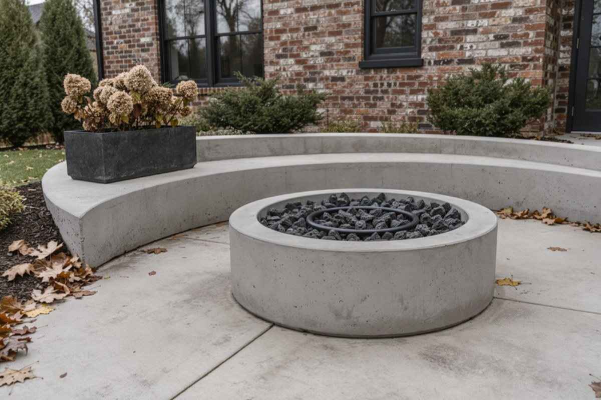
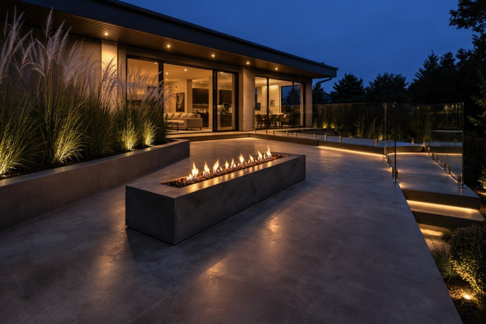
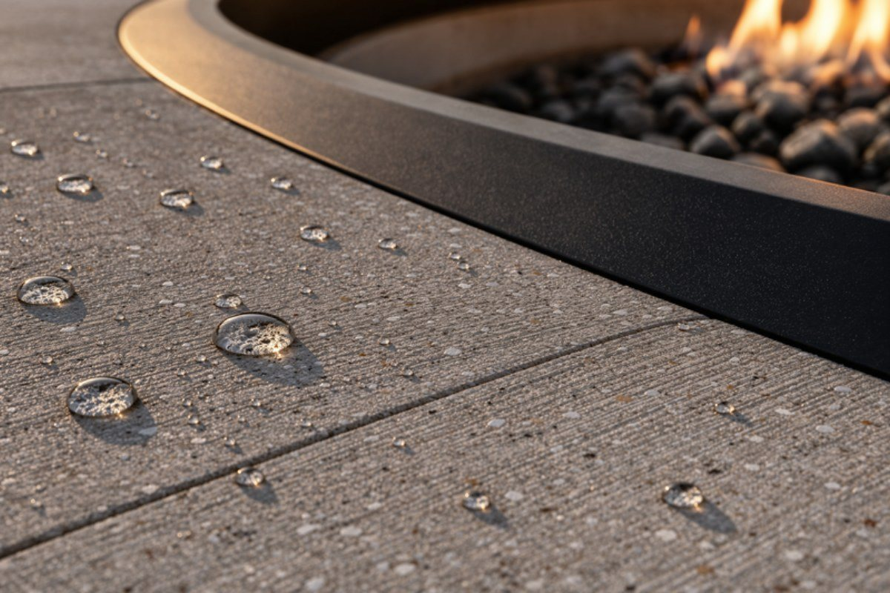

Homeowners across Toronto, Mississauga and Vaughan want the same thing from their backyard: a place to sit outside from April to November with a fire going. The furniture gets picked in an afternoon. The fire feature gets picked in a weekend. The slab underneath gets ignored, and that is the part that decides whether the whole space looks premium or tired.
A concrete overlay fixes that without a tear-out. It is a polymer-modified cement surface bonded to your existing slab, 6–12 mm thick, finished in a new colour and texture and sealed against water, salt and UV. Pair it with the right fire feature and the right detailing, and an old grey pad becomes the best room in the house for six months of the year.
First, the Rule Most Toronto Homeowners Don’t Know
Wood-burning backyard fire pits are not allowed in the City of Toronto. Toronto Fire Services states plainly that open air burning is not permitted, and that includes chimineas and other solid-fuel units. What is allowed: propane or natural gas fire pits and fire tables that are ULC/CSA approved, supervised whenever they are lit, kept away from combustibles and used according to the manufacturer’s instructions.
Outside Toronto the rules change by municipality. Some GTA cities allow small recreational wood fires with conditions; others do not. Check your own city’s open-air burning bylaw before you buy anything. For most of our clients the answer ends up being gas, and that shapes how we design the patio.
“Buy the fire feature after you plan the patio, not before. The gas line, the seating ring and the slope all have to be designed together.”
Why Resurface the Patio Instead of Replacing It
It costs a fraction of a new pour. Tear-out and replacement in the GTA starts around $22 per square foot once demolition, disposal and forming are added. An overlay on a sound slab runs roughly $8–$20.
No demolition, no machinery in your yard. Your lawn, fence and garden beds stay intact. Most fire pit patios are finished in two to four working days.
It solves the problems a fire area creates. Soot stains, burn marks, grease and old rust rings from a steel bowl all disappear under a new, sealed surface that wipes clean.
You can change the whole look. Warm buff, charcoal, slate-look, stone-look or a stamped pattern. The patio stops being a grey rectangle and starts looking designed.
Fire Pit Patio Concrete Overlay Costs in the GTA (2026)
These are typical installed prices for a structurally sound slab. Your quote depends on slab condition, crack repair, finish and access.
| Scope | Installed Cost (GTA, 2026) | Typical Timeline |
|---|---|---|
| Overlay, per square foot | $8 – $20 / sq ft | — |
| Fire pit zone, 150–250 sq ft | $1,800 – $4,500 | 2 – 3 days |
| Full patio, 300–450 sq ft | $3,500 – $7,500 | 2 – 4 days |
| Patio plus steps or seat ledge | $4,500 – $9,000 | 3 – 5 days |
The gas line to a fire table is a separate job for a licensed gas fitter, quoted by them. The smart sequence is gas line first, sleeve or conduit set in place, then the overlay goes on top so nothing gets cut afterwards.

How a Concrete Overlay Handles Heat Around a Fire Pit
This is where most contractors get vague, so here is the straight answer. A concrete overlay handles the radiant heat from a properly installed gas fire table without trouble. What it does not like is a heat source sitting directly on the surface for hours.
- Sealers are the weak point, not the cement. Acrylic sealers can soften, yellow or blister if a hot steel bowl sits right on them. We use a sealer system suited to exterior heat and UV, and we keep the fire unit raised on its own base or legs.
- Wood fires on bare concrete cause spalling. Where wood fires are legal, intense direct heat drives trapped moisture to steam and pops the surface. A steel or natural stone hearth pad under the pit solves this. Never set a wood fire straight onto any patio.
- Follow the manufacturer’s clearances. Every approved gas unit lists its clearance to combustibles and surface requirements. We design the seating ring around those numbers, not around guesswork.
- Slope matters more than people think. A fire table on a slab that holds water sits in ice all winter. We correct low spots during the overlay so water drains away from the unit and the house.
If your slab has heaved, sunk or has cracks wider than a coin, an overlay alone will not fix it. Movement comes back through any coating. We check the slab first and tell you honestly whether it needs crack repair, levelling, or in a few cases replacement. Pay for that assessment before you pay for a fire table.
Fire Pit Patio Design Ideas That Work in Ontario
- Warm charcoal with buff borders. Hides soot and leaf stains and frames the fire zone like a rug.
- Pale limestone grey. Stays cooler underfoot in July and looks crisp against cedar fences and autumn maples.
- Linear gas fire table on a deep charcoal trowel finish. The modern option for Vaughan, Oakville and Richmond Hill homes with glass railings and clean lines.
- A built-in seat ledge. Wrapping the overlay onto a low concrete ledge gives permanent seating without extra furniture to store each winter.
- A light broom or stone texture. Fire areas are used after dark and after rain. A slip-resistant texture is not optional around a fire.

Why November Is the Time to Plan a Spring Fire Pit Patio
Exterior overlays need warm, dry conditions to cure properly, so in the GTA the install window runs from spring to mid-fall. Book now and you get three advantages: your slab is assessed and quoted before the spring rush, your gas fitter can be scheduled early, and you lock a start date in April or May instead of waiting until July. Spring exterior slots fill first every year. For the full picture on timing, read our guide to the best time to resurface concrete.
How We Build a Fire Pit Patio Overlay
- Assessment. We check cracks, movement, drainage and where the fire feature and gas line will go.
- Prep. Pressure wash, grind or profile the surface, repair cracks and correct low spots.
- Overlay. A polymer-modified base and finish coat in your chosen colour and texture.
- Seal. A frost-resistant, UV-stable sealer built up in layers for heat, salt and freeze-thaw.
- Cure and hand back. Foot traffic in about a day, furniture and fire feature once fully cured.

Where We Work
Artisan Coat resurfaces patios, fire pit areas, pool decks, porches and driveways across Toronto, Mississauga, Brampton, Vaughan, Oakville, Etobicoke, North York, Scarborough, Richmond Hill, Markham, Burlington and the wider GTA. One crew handles prep, overlay and sealing, backed by a 3-year written warranty.
The Short Version
In Toronto, plan your fire pit patio around an approved gas or propane fire feature, because wood-burning fire pits are not permitted. A concrete overlay on a sound slab runs $8–$20 per square foot in the GTA in 2026, roughly $1,800–$4,500 for a fire pit zone and $3,500–$7,500 for a full patio, with no demolition.
Assess the slab, run the gas line first, raise the fire unit off the surface, correct the slope and seal for heat and frost. Get those right and the patio becomes the part of the yard everyone ends up sitting in.